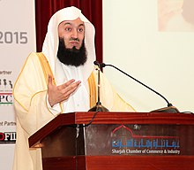

Ismail ibn Musa Menk

Islamic Preacher
4 things you need to know about Mufti Menk
- He was born 27 June 1975 (age 46)Salisbury, Rhodesia (present-day Harare, Zimbabwe)
- he undertook his initial studies with his father, memorizing the Quran and learning Arabic
- Menk was honoured with an Honorary Doctorate of Social Guidance by Aldersgate College, Philippines and its collaborative partner Aldersgate College – Dublin, Ireland on 16 April 2016.
- He was listed as one of The 500 Most Influential Muslims in 2014 and 2017